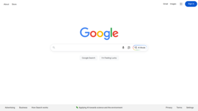
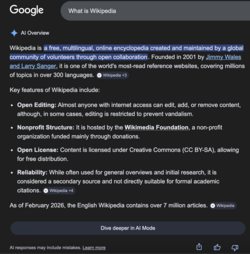
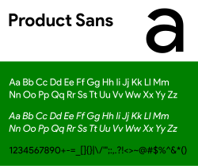
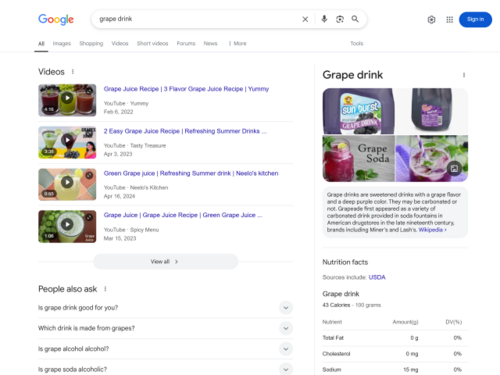
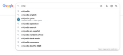
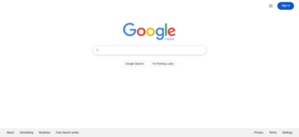
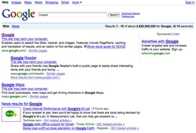

Google Search
Source: https://en.wikipedia.org/wiki/Google_Search
Category: products_search_and_ads
Depth: 1
Summary
Google Search is a search engine operated by Google. It allows users to search for information on the Web by entering keywords or phrases. Google Search uses algorithms to analyze and rank websites based on their relevance to the search query. Google Search is the most-visited website in the world. As of 2025, Google Search has a 90% share of the global search engine market. Approximately 24.1% of Google's monthly global traffic comes from the United States, 5.6% from India, 5.5% from Japan, 4.8% from Brazil, and 3.7% from the United Kingdom according to data provided by Similarweb. The same source reports that 58% of users are male and 42% are female.
Images







Full Article
Search engine from Google
"Google.com" redirects here. For the company itself, see Google.
Google Search (also known simply as Google or google.com) is a search engine operated by Google. It allows users to search for information on the Web by entering keywords or phrases. Google Search uses algorithms to analyze and rank websites based on their relevance to the search query. Google Search is the most-visited website in the world. As of 2025, Google Search has a 90% share of the global search engine market. Approximately 24.1% of Google's monthly global traffic comes from the United States, 5.6% from India, 5.5% from Japan, 4.8% from Brazil, and 3.7% from the United Kingdom according to data provided by Similarweb. The same source reports that 58% of users are male and 42% are female.
The order of search results returned by Google is based, in part, on a priority rank system called "PageRank". Google Search also provides many different options for customized searches, using symbols to include, exclude, specify or require certain search behavior, and offers specialized interactive experiences, such as flight status and package tracking, weather forecasts, currency, unit, and time conversions, word definitions, and more.
The main purpose of Google Search is to search for text in publicly accessible documents offered by web servers, as opposed to other data, such as images or data contained in databases. It was originally developed in 1996 by Larry Page, Sergey Brin, and Scott Hassan. The search engine would also be set up in the garage of Susan Wojcicki's Menlo Park home. In 2011, Google introduced "Google Voice Search" to search for spoken, rather than typed, words. In 2012, Google introduced a semantic search feature named Knowledge Graph.
Analysis of the frequency of search terms may indicate economic, social and health trends. Data about the frequency of use of search terms on Google can be openly inquired via Google Trends and have been shown to correlate with flu outbreaks and unemployment levels, and provide the information faster than traditional reporting methods and surveys. As of mid-2016, Google's search engine has begun to rely on deep neural networks.
In August 2024, a US judge in Virginia ruled that Google held an illegal monopoly over Internet search and search advertising. The court found that Google maintained its market dominance by paying large amounts to phone-makers and browser-developers to make Google its default search engine. In April 2025, the trial to determine which remedies sought by the Department of Justice would be imposed to address Google's illegal monopoly, which could include breaking up the company and preventing it from using its data to secure dominance in the AI sector.[needs update]
Search indexing
See also: Googlebot
Google indexes hundreds of terabytes of information from web pages. Before 2024, Google also provided desktop users links to cached versions of their search results, formed by the search engine's latest indexing of the website in question. Additionally, Google indexes some file types, being able to show users PDFs, Word documents, Excel spreadsheets, PowerPoint presentations, certain Flash multimedia content, and plain text files. Users can also activate "SafeSearch", a filtering technology aimed at preventing explicit and pornographic content from appearing in search results.
Despite Google search's immense index, sources generally assume that Google is only indexing less than 5% of the total Internet, with the rest belonging to the deep web, inaccessible through its search tools.
In 2012, Google changed its search indexing tools to demote sites that had been accused of piracy. In October 2016, Gary Illyes, a webmaster trends analyst with Google, announced that the search engine would be making a separate, primary web index dedicated for mobile devices, with a secondary, less up-to-date index for desktop use. The change was a response to the continued growth in mobile usage, and a push for web developers to adopt a mobile-friendly version of their websites. In December 2017, Google began rolling out the change, having already done so for multiple websites.
"Caffeine" search architecture upgrade
In August 2009, Google invited web developers to test a new search architecture, codenamed "Caffeine", and give their feedback. The new architecture provided no visual differences in the user interface, but added significant speed improvements and a new "under-the-hood" indexing infrastructure. The move was interpreted in some quarters as a response to Microsoft's recent release of an upgraded version of its own search service, renamed Bing, as well as the launch of Wolfram Alpha, a new search engine based on "computational knowledge". Google announced completion of "Caffeine" on June 8, 2010, claiming 50% fresher results due to continuous updating of its index.
With "Caffeine", Google moved its back-end indexing system away from MapReduce and onto Bigtable, the company's distributed database platform.
"Medic" search algorithm update
In August 2018, Danny Sullivan from Google announced a broad core algorithm update. As per current analysis done by the industry leaders Search Engine Watch and Search Engine Land, the update was to drop down the medical and health-related websites that were not user friendly and were not providing good user experience. This is why the industry experts named it "Medic".
Google reserves very high standards for YMYL (Your Money or Your Life) pages. This is because misinformation can affect users financially, physically, or emotionally. Therefore, the update targeted particularly those YMYL pages that have low-quality content and misinformation. This resulted in the algorithm targeting health and medical-related websites more than others. However, many other websites from other industries were also negatively affected.
Search results
Ranking of results
By 2012, it handled more than 3.5 billion searches per day. In 2013 the European Commission found that Google Search favored Google's own products, instead of the best result for consumers' needs. In February 2015 Google announced a major change to its mobile search algorithm which would favor mobile friendly over other websites. Nearly 60% of Google searches come from mobile phones. Google says it wants users to have access to premium quality websites. Those websites which lack a mobile-friendly interface would be ranked lower and it is expected that this update will cause a shake-up of ranks[needs update]. Businesses who fail to update their websites accordingly could see a dip in their regular websites traffic.
PageRank
Main article: PageRank
Google's rise was largely due to a patented algorithm called PageRank which helps rank web pages that match a given search string. When Google was a Stanford research project, it was nicknamed BackRub because the technology checks backlinks to determine a site's importance. Other keyword-based methods to rank search results, used by many search engines that were once more popular than Google, would check how often the search terms occurred in a page, or how strongly associated the search terms were within each resulting page. The PageRank algorithm instead analyzes human-generated links assuming that web pages linked from many important pages are also important. The algorithm computes a recursive score for pages, based on the weighted sum of other pages linking to them. PageRank is thought to correlate well with human concepts of importance. In addition to PageRank, Google, over the years, has added many other secret criteria for determining the ranking of resulting pages. This is reported to comprise over 250 different indicators, the specifics of which are kept secret to avoid difficulties created by scammers and help Google maintain an edge over its competitors globally.
PageRank was influenced by a similar page-ranking and site-scoring algorithm earlier used for RankDex, developed by Robin Li in 1996. Larry Page's patent for PageRank filed in 1998 includes a citation to Li's earlier patent. Li later went on to create the Chinese search engine Baidu in 2000.
In a potential hint of Google's future direction of their Search algorithm, Google's then chief executive Eric Schmidt, said in a 2007 interview with the Financial Times: "The goal is to enable Google users to be able to ask the question such as 'What shall I do tomorrow?' and 'What job shall I take?'". Schmidt reaffirmed this during a 2010 interview with The Wall Street Journal: "I actually think most people don't want Google to answer their questions, they want Google to tell them what they should be doing next."
Google optimization
Main article: Search engine optimization
Because Google is the most popular search engine, many webmasters attempt to influence their website's Google rankings. An industry of consultants has arisen to help websites increase their rankings on Google and other search engines. This field, called search engine optimization, attempts to discern patterns in search engine listings, and then develop a methodology for improving rankings to draw more searchers to their clients' sites. Search engine optimization encompasses both "on page" factors (like body copy, title elements, H1 heading elements and image alt attribute values) and Off Page Optimization factors (like anchor text and PageRank). The general idea is to affect Google's relevance algorithm by incorporating the keywords being targeted in various places "on page", in particular the title element and the body copy (note: the higher up in the page, presumably the better its keyword prominence and thus the ranking). Too many occurrences of the keyword, however, cause the page to look suspect to Google's spam checking algorithms. Google has published guidelines for website owners who would like to raise their rankings when using legitimate optimization consultants. It has been hypothesized, and, allegedly, is the opinion of the owner of one business about which there have been numerous complaints, that negative publicity, for example, numerous consumer complaints, may serve as well to elevate page rank on Google Search as favorable comments. The particular problem addressed in The New York Times article, which involved DecorMyEyes, was addressed shortly thereafter by an undisclosed fix in the Google algorithm. According to Google, it was not the frequently published consumer complaints about DecorMyEyes which resulted in the high ranking but mentions on news websites of events which affected the firm such as legal actions against it. Google Search Console helps to check for websites that use duplicate or copyright content.
"Hummingbird" search algorithm upgrade
Main article: Google Hummingbird
In 2013, Google significantly upgraded its search algorithm with "Hummingbird". Its name was derived from the speed and accuracy of the hummingbird. The change was announced on September 26, 2013, having already been in use for a month. "Hummingbird" places greater emphasis on natural language queries, considering context and meaning over individual keywords. It also looks deeper at content on individual pages of a website, with improved ability to lead users directly to the most appropriate page rather than just a website's homepage. The upgrade marked the most significant change to Google search in years, with more "human" search interactions and a much heavier focus on conversation and meaning. Thus, web developers and writers were encouraged to optimize their sites with natural writing rather than forced keywords, and make effective use of technical web development for on-site navigation.
Search results quality
In 2023, drawing on internal Google documents disclosed as part of the United States v. Google LLC (2020) antitrust case, technology reporters claimed that Google Search was "bloated and overmonetized" and that the "semantic matching" of search queries put advertising profits before quality. Wired withdrew Megan Gray's piece after Google complained about alleged inaccuracies, while the author reiterated that «As stated in court, "A goal of Project Mercury was to increase commercial queries"».
In March 2024, Google announced a significant update to its core search algorithm and spam targeting, which is expected to wipe out 40 percent of all spam results. On March 20th, it was confirmed that the roll out of the spam update was complete.
Shopping search
On September 10, 2024, the European-based EU Court of Justice found that Google held an illegal monopoly with the way the company showed favoritism to its shopping search, and could not avoid paying €2.4 billion. The EU Court of Justice referred to Google's treatment of rival shopping searches as "discriminatory" and in violation of the Digital Markets Act.
Interface
Page layout
At the top of the search page, the approximate result count and the response time two digits behind decimal is noted. Of search results, page titles and URLs, dates, and a preview text snippet for each result appears. Along with web search results, sections with images, news, and videos may appear. The length of the previewed text snipped was experimented with in 2015 and 2017.
Universal search
"Universal search" was launched by Google on May 16, 2007, as an idea that merged the results from different kinds of search types into one. Prior to Universal search, a standard Google search would consist of links only to websites. Universal search, however, incorporates a wide variety of sources, including websites, news, pictures, maps, blogs, videos, and more, all shown on the same search results page. Marissa Mayer, then-vice president of search products and user experience, described the goal of Universal search as "we're attempting to break down the walls that traditionally separated our various search properties and integrate the vast amounts of information available into one simple set of search results.
In June 2017, Google expanded its search results to cover available job listings. The data is aggregated from various major job boards and collected by analyzing company homepages. Initially only available in English, the feature aims to simplify finding jobs suitable for each user.
Rich snippets
In May 2009, Google announced that they would be parsing website microformats to populate search result pages with "Rich snippets". Such snippets include additional details about results, such as displaying reviews for restaurants and social media accounts for individuals.
In May 2016, Google expanded on the "Rich snippets" format to offer "Rich cards", which, similarly to snippets, display more information about results, but shows them at the top of the mobile website in a swipeable carousel-like format. Originally limited to movie and recipe websites in the United States only, the feature expanded to all countries globally in 2017.
Knowledge Graph
Main article: Knowledge Graph (Google)
The Knowledge Graph is a knowledge base used by Google to enhance its search engine's results with information gathered from a variety of sources. This information is presented to users in a box to the right of search results. Knowledge Graph boxes were added to Google's search engine in May 2012, starting in the United States, with international expansion by the end of the year. The information covered by the Knowledge Graph grew significantly after launch, tripling its original size within seven months, and being able to answer "roughly one-third" of the 100 billion monthly searches Google processed in May 2016. The information is often used as a spoken answer in Google Assistant and Google Home searches. The Knowledge Graph has been criticized for providing answers without source attribution.
Google Knowledge Panel
A Google Knowledge Panel is a feature integrated into Google search engine result pages, designed to present a structured overview of entities such as individuals, organizations, locations, or objects directly within the search interface. This feature leverages data from Google's Knowledge Graph, a database that organizes and interconnects information about entities, enhancing the retrieval and presentation of relevant content to users.
The content within a Knowledge Panel is derived from various sources, including Wikipedia and other structured databases, ensuring that the information displayed is both accurate and contextually relevant. For instance, querying a well-known public figure may trigger a Knowledge Panel displaying essential details such as biographical information, birthdate, and links to social media profiles or official websites.
The primary objective of the Google Knowledge Panel is to provide users with immediate, factual answers, reducing the need for extensive navigation across multiple web pages.
Personal tab
In May 2017, Google enabled a new "Personal" tab in Google Search, letting users search for content in their Google accounts' various services, including email messages from Gmail and photos from Google Photos.
Google Discover
Google Discover, previously known as Google Feed, is a personalized stream of articles, videos, and other news-related content. The feed contains a "mix of cards" which show topics of interest based on users' interactions with Google, or topics they choose to follow directly. Cards are based on what Google expects you to be interested in at the moment. They include links to news stories, YouTube videos, sports scores, and recipes. Users can also tell Google when they are not interested in certain topics to avoid seeing future updates.
Google Discover launched in December 2016 and received a major update in July 2017. Another major update was released in September 2018, which renamed the app from Google Feed to Google Discover, updated the design, and added more features.
Discover can be found on a tab in the Google app and by swiping left on the home screen of certain Android devices. As of 2019, Google does not allow political campaigns worldwide to target their advertisement to people to make them vote.
AI Overviews
Main article: AI Overviews
At the 2023 Google I/O event in May, Google unveiled Search Generative Experience (SGE), an experimental feature in Google Search available through Google Labs which produces AI-generated summaries in response to search prompts. This was part of Google's wider efforts to counter the unprecedented rise of generative AI technology, ushered by OpenAI's launch of ChatGPT, which sent Google executives to a panic due to its potential threat to Google Search. Google added the ability to generate images in October. At I/O in 2024, the feature was upgraded and renamed AI Overviews.
AI Overviews was rolled out to users in the United States in May 2024. The feature faced public criticism in the first weeks of its rollout after errors from the tool went viral online. These included results suggesting users add glue to pizza or eat rocks, or incorrectly claiming Barack Obama is Muslim. Google described these viral errors as "isolated examples", maintaining that most AI Overviews provide accurate information. Two weeks after the rollout of AI Overviews, Google made technical changes and scaled back the feature, pausing its use for some health-related queries and limiting its reliance on social media posts. Scientific American has criticised the system on environmental grounds, as such a search uses 30 times more energy than a conventional one. It has also been criticized for condensing information from various sources, making it less likely for people to view full articles and websites. When it was announced in May 2024, Danielle Coffey, CEO of the News/Media Alliance was quoted as saying "This will be catastrophic to our traffic, as marketed by Google to further satisfy user queries, leaving even less incentive to click through so that we can monetize our content."
In August 2024, AI Overviews were rolled out in the UK, India, Japan, Indonesia, Mexico and Brazil, with local language support. On October 28, 2024, AI Overviews was rolled out to 100 more countries, including Australia and New Zealand.
AI Mode
Main article: AI Mode
| icon | This section does not cite any sources. Please help improve this section by adding citations to reliable sources. Unsourced material may be challenged and removed. (October 2025) (Learn how and when to remove this message) |
{kind=link}
In March 2025, Google introduced an experimental "AI Mode" within its Search platform, enabling users to input complex, multi-part queries and receive comprehensive, AI-generated responses. This feature uses Google's advanced Gemini 2.0 model, which enhances the system's reasoning capabilities and supports multimodal inputs, including text, images, and voice.
Initially, AI Mode was available to Google One AI Premium subscribers in the United States, who could access it through the Search Labs platform. This phased rollout allowed Google to gather user feedback and refine the feature before a broader release.
Redesigns
In late June 2011, Google introduced a new look to the Google homepage in order to boost the use of the Google+ social tools.
One of the major changes was replacing the classic navigation bar with a black one. Google's digital creative director Chris Wiggins explains: "We're working on a project to bring you a new and improved Google experience, and over the next few months, you'll continue to see more updates to our look and feel." The new navigation bar has been negatively received by a vocal minority.
In November 2013, Google started testing yellow labels for advertisements displayed in search results, to improve user experience. The new labels, highlighted in yellow color, and aligned to the left of each sponsored link help users differentiate between organic and sponsored results.
On December 15, 2016, Google rolled out a new desktop search interface that mimics their modular mobile user interface. The mobile design consists of a tabular design that highlights search features in boxes and works by imitating the desktop Knowledge Graph real estate, which appears in the right-hand rail of the search engine result page, these featured elements frequently feature Twitter carousels, People Also Search For, and Top Stories (vertical and horizontal design) modules. The Local Pack and Answer Box were two of the original features of the Google SERP that were primarily showcased in this manner, but this new layout creates a previously unseen level of design consistency for Google results.
Smartphone apps
Google offers a "Google Search" mobile app for Android and iOS devices. The mobile apps exclusively feature Google Discover and a "Collections" feature, in which the user can save for later perusal any type of search result like images, bookmarks or map locations into groups. Android devices were introduced to a preview of the feed, perceived as related to Google Now, in December 2016, while it was made official on both Android and iOS in July 2017.
In April 2016, Google updated its Search app on Android to feature "Trends"; search queries gaining popularity appeared in the autocomplete box along with normal query autocompletion. The update received significant backlash, due to encouraging search queries unrelated to users' interests or intentions, prompting the company to issue an update with an opt-out option. In September 2017, the Google Search app on iOS was updated to feature the same functionality.
In December 2017, Google released "Google Go", an app designed to enable use of Google Search on physically smaller and lower-spec devices in multiple languages. A Google blog post about designing "India-first" products and features explains that it is "tailor-made for the millions of people in [India and Indonesia] coming online for the first time".
Performing a search
Google Search consists of a series of localized websites. The largest of those, the google.com site, is the top most-visited website in the world. Some of its features include a definition link for most searches including dictionary words, the number of results you got on your search, links to other searches (e.g. for words that Google believes to be misspelled, it provides a link to the search results using its proposed spelling), the ability to filter results to a date range, and many more.
Search syntax
Google search accepts queries as normal text, as well as individual keywords. It automatically corrects apparent misspellings by default (while offering to use the original spelling as a selectable alternative), and provides the same results regardless of capitalization. For more customized results, one can use a wide variety of operators, including, but not limited to:
ORor|– Search for webpages containing one of two similar queries, such as marathon OR raceAND– Search for webpages containing two similar queries, such as marathon AND runner-(minus sign) – Exclude a word or a phrase, so that "apple -tree" searches where word "tree" is not used-ai– Exclude AI-generated content from webpages, including Google AI Overviews.""– Force inclusion of a word or a phrase, such as "tallest building"*– Placeholder symbol allowing for any substitute words in the context of the query, such as "largest * in the world"..– Search within a range of numbers, such as "camera $50..$100"site:– Search within a specific website, such as "site:youtube.com"-site:– Do not display search results from within a specific website, such as "-site:youtube.com"define:– Search for definitions for a word or phrase, such as "define:phrase"stocks:– See the stock price of investments, such as "stocks:googl"related:– Find web pages related to specific URL addresses, such as "related:www.wikipedia.org"( )– Group operators and searches, such as (marathon OR race) AND shoesfiletype:orext:– Search for specific file types, such as filetype:gifbefore:– Search for before a specific date, such as spacex before:2020-08-11after:– Search for after a specific date, such as iphone after:2007-06-29@– Search for the search term on a specific social media site, such as "@twitter"
Google also offers a Google Advanced Search page with a web interface to access the advanced features without needing to remember the special operators.
As of 2024 Google no longer displays cached versions of webpages.
Previously the command cache: would present a cached version of a webpage with the search term highlighted, e.g. "cache:www.google.com xxx" showed cached content with word "xxx" highlighted.
Unlike other search engines, when searching for exact phrases, Google Search only takes words that are on the same line into account.
Query expansion
Google applies query expansion to submitted search queries, using techniques to deliver results that it considers "smarter" than the query users actually submitted. This technique involves several steps, including:
- Word stemming – Certain words can be reduced so other, similar terms, are also found in results, so that "translator" can also search for "translation"
- Acronyms – Searching for abbreviations can also return results about the name in its full length, so that "NATO" can show results for "North Atlantic Treaty Organization"
- Misspellings – Google will often suggest correct spellings for misspelled words
- Synonyms – In most cases where a word is incorrectly used in a phrase or sentence, Google search will show results based on the correct synonym
- Translations – The search engine can, in some instances, suggest results for specific words in a different language
- Ignoring words – When search queries contain extraneous or insignificant words, Google search may drop those specific words from the query
- Location sensitivity – Google may consider users' geographical location to deliver more relevant results.
In 2008, Google started to give users autocompleted search suggestions in a list below the search bar while typing, originally with the approximate result count previewed for each listed search suggestion.
"I'm Feeling Lucky"
"I'm Feeling Lucky" redirects here. For the 2011 book by Douglas Edwards, see I'm Feeling Lucky (book).
Google's homepage used to show a button labeled "I'm Feeling Lucky". This feature originally allowed users to type in their search query, click the button and be taken directly to the first result, bypassing the search results page. Clicking it while leaving the search box empty opens Google's archive of Doodles. With the 2010 announcement of Google Instant, an automatic feature that immediately displays relevant results as users are typing in their query, the "I'm Feeling Lucky" button disappears, requiring that users opt-out of Instant results through search settings to keep using the "I'm Feeling Lucky" functionality. In 2012, "I'm Feeling Lucky" was changed to serve as an advertisement for Google services; users hover their computer mouse over the button, it spins and shows an emotion ("I'm Feeling Puzzled" or "I'm Feeling Trendy", for instance), and, when clicked, takes users to a Google service related to that emotion.
Tom Chavez of "Rapt", a firm helping to determine a website's advertising worth, estimated in 2007 that Google lost $110 million in revenue per year due to use of the button, which bypasses the advertisements found on the search results page.
Special interactive features
See also: List of Google Easter eggs § Embedded tools
Besides the main text-based search-engine function of Google search, it also offers multiple quick, interactive features. These include, but are not limited to:
- Calculator
- Time zone, currency, and unit conversions
- Word translations
- Flight status
- Local film showings
- Weather forecasts
- Population and unemployment rates
- Package tracking
- Word definitions
- Metronome
- Roll a die
- "Do a barrel roll" (search page spins)
- "Askew" (results show up sideways)
"OK Google" conversational search
See also: Google Now and Google Assistant
During Google's developer conference, Google I/O, in May 2013, the company announced that users on Google Chrome and ChromeOS would be able to have the browser initiate an audio-based search by saying "OK Google", with no button presses required. After having the answer presented, users can follow up with additional, contextual questions; an example include initially asking "OK Google, will it be sunny in Santa Cruz this weekend?", hearing a spoken answer, and reply with "how far is it from here?" An update to the Chrome browser with voice-search functionality rolled out a week later, though it required a button press on a microphone icon rather than "OK Google" voice activation. Google released a browser extension for the Chrome browser, named with a "beta" tag for unfinished development, shortly thereafter. In May 2014, the company officially added "OK Google" into the browser itself; they removed it in October 2015, citing low usage, though the microphone icon for activation remained available. In May 2016, 20% of search queries on mobile devices were done through voice.
Operations
Search products
Main article: List of Google products
"Google Videos" redirects here. For other uses, see Google Videos (disambiguation).
In addition to its tool for searching web pages, Google also provides services for searching images (Google Images), Usenet newsgroups, news websites, videos (Google Videos), searching by locality, maps, and items for sale online. Google Videos allows searching the World Wide Web for video clips. The service evolved from Google Video, Google's discontinued video hosting service that also allowed to search the web for video clips.
In 2012, Google has indexed over 30 trillion web pages, and received 100 billion queries per month. It also caches much of the content that it indexes. Google operates other tools and services including Google News, Google Shopping, Google Maps, Google Custom Search, Google Earth, Google Docs, Picasa (discontinued), Panoramio (discontinued), YouTube, Google Translate, Google Blog Search, and Google Desktop Search (discontinued).
There are also products available from Google that are not directly search-related. Gmail, for example, is a webmail application, but still includes search features; Google Browser Sync does not offer any search facilities, although it aims to organize your browsing time.
Energy consumption
In 2009, Google claimed that a search query requires altogether about 1 kJ or 0.0003 kW·h, which is enough to raise the temperature of one liter of water by 0.24 °C. According to green search engine Ecosia, the industry standard for search engines is estimated to be about 0.2 grams of CO2 emission per search. Google's 40,000 searches per second translate to 8 kg CO2 per second or over 252 million kilos of CO2 per year.
Google Doodles
Main article: Google Doodle
On certain occasions, the logo on Google's webpage will change to a special version, known as a "Google Doodle". This is a picture, drawing, animation, or interactive game that includes the logo. It is usually done for a special event or day although not all of them are well known. Clicking on the Doodle links to a string of Google search results about the topic. The first was a reference to the Burning Man Festival in 1998, and others have been produced for the birthdays of notable people like Albert Einstein, historical events like the interlocking Lego block's 50th anniversary and holidays like Valentine's Day. Some Google Doodles have interactivity beyond a simple search, such as the famous "Google Pac-Man" version that appeared on May 21, 2010.
Criticism
Privacy
Main article: Privacy concerns regarding Google
In 2012, the US Federal Trade Commission fined Google US$22.5 million for violating their agreement not to violate the privacy of users of Apple's Safari web browser. The FTC was also continuing to investigate if Google's favoring of their own services in their search results violated antitrust regulations.
Since 2012, Google Inc. has globally introduced encrypted connections for most of its clients to bypass governative blockings of commercial and IT services.
Google has been criticized for placing long-term cookies on users' machines to store preferences, a tactic which also enables them to track a user's search terms and retain the data for more than a year. Google searches have also triggered keyword warrants and geofence warrants in which information is shared with law enforcement, leading to a criminal case. Investigators can request Google to disclose everyone who searched a keyword or query or every phone in a particular place at a certain time. In 2023, the Colorado Supreme Court upheld the use of search history requests to identify suspects in a 2020 arson, later stating that it is not a "broad proclamation" and noted that the warrant did not have an individualized probable cause.
To solve these concerns privacy-focused alternatives have cropped up as alternatives to Google Search, such as DuckDuckGo or StartPage, that refrain from collecting or storing personal data such as IP addresses, search histories, user profiles or cookies.
Complaints about indexing
In 2003, The New York Times complained about Google's indexing, claiming that Google's caching of content on its site infringed its copyright for the content. In both Field v. Google and Parker v. Google, the United States District Court of Nevada ruled in favor of Google.
Child sexual abuse
| [icon] | This section needs expansion. You can help by making an edit requestadding missing information. (May 2024) |
![[icon]](./File:Wiki_letter_w_cropped.svg){kind=link}
A 2019 New York Times article on Google Search showed that images of child sexual abuse had been found on Google and that the company had been reluctant at times to remove them.
January 2009 malware bug
Google flags search results with the message "This site may harm your computer" if the site is known to install malicious software in the background or otherwise surreptitiously. For approximately 40 minutes on January 31, 2009, all search results were mistakenly classified as malware and could therefore not be clicked; instead a warning message was displayed and the user was required to enter the requested URL manually. The bug was caused by human error. The URL of "/" (which expands to all URLs) was mistakenly added to the malware patterns file.
Possible misuse of search results
In 2007, a group of researchers observed a tendency for users to rely exclusively on Google Search for finding information, writing that "With the Google interface the user gets the impression that the search results imply a kind of totality. In fact, one only sees a small part of what one could see if one also integrates other research tools."
In 2011, Google Search query results have been shown by Internet activist Eli Pariser to be tailored to users, effectively isolating users in what he defined as a filter bubble. Pariser holds algorithms used in search engines such as Google Search responsible for catering "a personal ecosystem of information". Although contrasting views have mitigated the potential threat of "informational dystopia" and questioned the scientific nature of Pariser's claims, filter bubbles have been mentioned to account for the surprising results of the U.S. presidential election in 2016 alongside fake news and echo chambers, suggesting that Facebook and Google have designed personalized online realities in which "we only see and hear what we like".
In 2023, Cory Doctorow also observed that the declining quality of Google's search results had benefitted its advertising customers.
Payments to Apple
In a November 2023 disclosure, during the ongoing antitrust trial against Google, an economics professor at the University of Chicago revealed that Google pays Apple 36% of all search advertising revenue generated when users access Google through the Safari browser. This revelation reportedly caused Google's lead attorney to cringe visibly. The revenue generated from Safari users has been kept confidential, but the 36% figure suggests that it is likely in the tens of billions of dollars.
Both Apple and Google have argued that disclosing the specific terms of their search default agreement would harm their competitive positions. However, the court ruled that the information was relevant to the antitrust case and ordered its disclosure. This revelation has raised concerns about the dominance of Google in the search engine market and the potential anticompetitive effects of its agreements with Apple.
Big data and human bias
Google search engine robots are programmed to use algorithms that understand and predict human behavior. The book, Race After Technology: Abolitionist Tools for the New Jim Code by Ruha Benjamin talks about human bias as a behavior that the Google search engine can recognize. In 2016, some users Google searched "three Black teenagers" and images of criminal mugshots of young African American teenagers came up. Then, the users searched "three White teenagers" and were presented with photos of smiling, happy teenagers. They also searched for "three Asian teenagers", and very revealing photos of Asian girls and women appeared. Benjamin concluded that these results reflect human prejudice and views on different ethnic groups. A group of analysts explained the concept of a racist computer program: "The idea here is that computers, unlike people, can't be racist but we're increasingly learning that they do in fact take after their makers ... Some experts believe that this problem might stem from the hidden biases in the massive piles of data that the algorithms process as they learn to recognize patterns ... reproducing our worst values".
Monopoly ruling
On August 5, 2024, Google lost a lawsuit which started in 2020 in D.C. Circuit Court, with Judge Amit Mehta finding that the company had an illegal monopoly over Internet search. This monopoly was held to be in violation of Section 2 of the Sherman Act. Google has said it will appeal the ruling, though they did propose to loosen search deals with Apple and others requiring them to set Google as the default search engine.
Trademark
Main article: Google (verb)
As people talk about "googling" rather than searching, the company has taken some steps to defend its trademark, in an effort to prevent it from becoming a generic trademark. This has led to lawsuits, threats of lawsuits, and the use of euphemisms, such as calling Google Search a famous web search engine.
Discontinued features
Translate foreign pages
Until May 2013, Google Search had offered a feature to translate search queries into other languages. A Google spokesperson told Search Engine Land that "Removing features is always tough, but we do think very hard about each decision and its implications for our users. Unfortunately, this feature never saw much pick up".
Instant search
Instant search was announced in September 2010 as a feature that displayed suggested results while the user typed in their search query, initially only in select countries or to registered users. The primary advantage of the new system was its ability to save time, with Marissa Mayer, then-vice president of search products and user experience, proclaiming that the feature would save 2–5 seconds per search, elaborating that "That may not seem like a lot at first, but it adds up. With Google Instant, we estimate that we'll save our users 11 hours with each passing second!" Matt Van Wagner of Search Engine Land wrote that "Personally, I kind of like Google Instant and I think it represents a natural evolution in the way search works", and also praised Google's efforts in public relations, writing that "With just a press conference and a few well-placed interviews, Google has parlayed this relatively minor speed improvement into an attention-grabbing front-page news story". The upgrade also became notable for the company switching Google Search's underlying technology from HTML to AJAX.
Instant Search could be disabled via Google's "preferences" menu for those who didn't want its functionality.
The publication 2600: The Hacker Quarterly compiled a list of words that Google Instant did not show suggested results for, with a Google spokesperson giving the following statement to Mashable:
There are several reasons you may not be seeing search queries for a particular topic. Among other things, we apply a narrow set of removal policies for pornography, violence, and hate speech. It's important to note that removing queries from Autocomplete is a hard problem, and not as simple as blacklisting particular terms and phrases.
In search, we get more than one billion searches each day. Because of this, we take an algorithmic approach to removals, and just like our search algorithms, these are imperfect. We will continue to work to improve our approach to removals in Autocomplete, and are listening carefully to feedback from our users.
Our algorithms look not only at specific words, but compound queries based on those words, and across all languages. So, for example, if there's a bad word in Russian, we may remove a compound word including the transliteration of the Russian word into English. We also look at the search results themselves for given queries. So, for example, if the results for a particular query seem pornographic, our algorithms may remove that query from Autocomplete, even if the query itself wouldn't otherwise violate our policies. This system is neither perfect nor instantaneous, and we will continue to work to make it better.
PC Magazine discussed the inconsistency in how some forms of the same topic are allowed; for instance, "lesbian" was blocked, while "gay" was not, and "cocaine" was blocked, while "crack" and "heroin" were not. The report further stated that seemingly normal words were also blocked due to pornographic innuendos, most notably "scat", likely due to having two completely separate contextual meanings, one for music and one for a sexual practice.
On July 26, 2017, Google removed Instant results, due to a growing number of searches on mobile devices, where interaction with search, as well as screen sizes, differ significantly from a computer.
Instant previews
"Instant previews" allowed previewing screenshots of search results' web pages without having to open them. Clicking on the magnifying glass beside the search-result links will show a screenshot of the web page and highlight the image's relevant text. Google said that the feature "helps people find information faster by showing a visual preview of each result." The snapshots of web pages are stored on Google's servers. The feature was introduced in November 2010 to the desktop website and removed in April 2013, citing low usage.
Dedicated encrypted search page
Various search engines provide encrypted Web search facilities. In May 2010 Google rolled out SSL-encrypted web search. The encrypted search was accessed at encrypted.google.com However, the web search is encrypted via Transport Layer Security (TLS) by default today, thus every search request should be automatically encrypted if TLS is supported by the web browser. On its support website, Google announced that the address encrypted.google.com would be turned off April 30, 2018, stating that all Google products and most new browsers use HTTPS connections as the reason for the discontinuation.
Real-Time Search
Google Real-Time Search was a feature of Google Search in which search results also sometimes included real-time information from sources such as Twitter, Facebook, blogs, and news websites. The feature was introduced on December 7, 2009, and went offline on July 2, 2011, after the deal with Twitter expired. Real-Time Search included Facebook status updates beginning on February 24, 2010. A feature similar to Real-Time Search was already available on Microsoft's Bing search engine, which showed results from Twitter and Facebook. The interface for the engine showed a live, descending "river" of posts in the main region (which could be paused or resumed), while a bar chart metric of the frequency of posts containing a certain search term or hashtag was located on the right hand corner of the page above a list of most frequently reposted posts and outgoing links. Hashtag search links were also supported, as were "promoted" tweets hosted by Twitter (located persistently on top of the river) and thumbnails of retweeted image or video links.
In January 2011, geolocation links of posts were made available alongside results in Real-Time Search. In addition, posts containing syndicated or attached shortened links were made searchable by the link: query option. In July 2011, Real-Time Search became inaccessible, with the Real-Time link in the Google sidebar disappearing and a custom 404 error page generated by Google returned at its former URL. Google originally suggested that the interruption was temporary and related to the launch of Google+; they subsequently announced that it was due to the expiry of a commercial arrangement with Twitter to provide access to tweets.
See also
-
List of search engines by popularity – Software system for finding relevant information on the WebPages displaying short descriptions of redirect targets
- Timeline of Google Search
- Censorship by Google § Google Search
- Google (verb) – Transitive verb, to search using Google
- DeGoogle – Campaign to stop using Google products
- Dragonfly (search engine) – Google search engine prototype for China
- DuckDuckGo – Privacy-focused online search engine
- Google bombing – Practice that causes a webpage to have a high rank in Google
- Google Panda – Change to Google's search results ranking algorithm
- Google Penguin – Google search engine algorithm update
- Googlewhack – Contest to find a Google Search query that returns a single result
- Halalgoogling – Islamic search engine blocking haram content
- Prabhakar Raghavan – American computer scientist
- Reunion (advertisement) – Google India advertisement for Google Search
- List of search engines
- Comparison of web search engines
- History of Google
- List of Google products
References
Further reading
- Google Hacks from O'Reilly is a book containing tips about using Google effectively. Now in its third edition (2006). ISBN 0-596-52706-3.
- Google: The Missing Manual by Sarah Milstein and Rael Dornfest (O'Reilly, 2004). ISBN 0-596-00613-6
- How to Do Everything with Google by Fritz Schneider, Nancy Blachman, and Eric Fredricksen (McGraw-Hill Osborne Media, 2003). ISBN 0-07-223174-2
- Google Power by Chris Sherman (McGraw-Hill Osborne Media, 2005). ISBN 0-07-225787-3
- Barroso, Luiz Andre; Dean, Jeffrey; Hölzle, Urs (2003). "Web Search for a Planet: The Google Cluster Architecture". IEEE Micro. 23 (2): 22–28. Bibcode:2003IMicr..23b..22B. doi:10.1109/MM.2003.1196112. ISSN 0272-1732. S2CID 15886858.
- Broderick, Ryan (August 28, 2023). "The end of the Googleverse". The Verge. Archived from the original on August 28, 2023. Retrieved August 30, 2023.
- Belanger, Ashley (October 27, 2023). "Google loses fight to hide 2021 money pit: $26B in default contracts". Ars Technica. Retrieved October 28, 2023.
External links

Wikimedia Commons has media related to Google Search.
| - v - t - e Google Search | |
|---|---|
| Timeline of Google Search | |
| Features | - AI Overviews - AI Mode - Knowledge Graph - SafeSearch - SearchWiki - Voice Search - Google Personalized Search |
| Component algorithms and updates | - Googlebot - Hummingbird - Mobilegeddon - PageRank - Matrix - Panda - Penguin - Pigeon - RankBrain |
| Special purpose search engines | - Google Dataset Search - Google Books - Google Images - Google Finance - Google News - Google News Archive - Google Scholar - Google Shopping - Dragonfly - Google Blog Search - Google Code Search |
| Data insights | - Google Books Ngram Viewer - Google Trends - Google Insights for Search - Year in Search |
| Developer and business tools | - Google Programmable Search Engine - Google Search Console - Get Your Business Online |
| Related | - "Reunion" - Google Search Appliance - FairSearch |
| - v - t - e Google | |
|---|---|
| a subsidiary of Alphabet | |
| Company | |
| Development | |
| Software | |
| Hardware | |
| - v - t - e Litigation | |
| Related | |
| Italics denote discontinued products. - Category - Outline |
| - v - t - e Alphabet Inc. | |
|---|---|
| Subsidiaries | |
| People | |
| - Category - Companies portal - icon Internet portal |
{kind=link}
| - v - t - e Web search engines | |
|---|---|
| Active | |
| Defunct or Inactive | - 123people - A9.com - Aliweb - AlltheWeb - AltaVista - Blekko - Chorki - Cuil - Empas - Forestle - GenieKnows - Gigablast - Go.com - HotBot - Infoseek - Inktomi - JumpStation - LeapFish - Mullvad Leta - Neeva - Northern Light - Pipilika - Powerset - Scroogle - SearchMe - Searx - Soso - Sputnik - Teoma - Viewzi - Vivisimo - Volunia - W3Catalog - Wikiseek - Yebol - Yippy - Yooz |
| - Comparison - Complete list |
| Authority control databases Edit this at Wikidata | |
|---|---|
| International | - VIAF - GND - FAST |
| National | - United States - France - BnF data - Czech Republic - Norway - Israel |